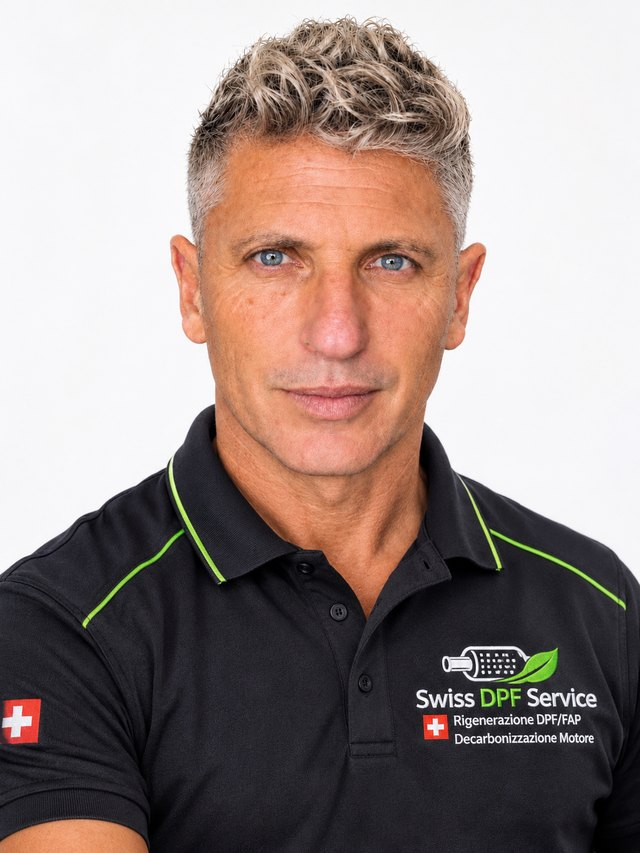
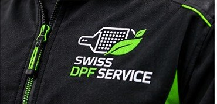

Spezialist für Partikelfiltersysteme in Figino
SWISS DPF SERVICE ist im Kanton Tessin eine Anlaufstelle für alle, die einen Ansprechpartner für Partikelfiltersysteme suchen.

Hinter SWISS DPF SERVICE steht eine Person.
Ich habe als Angestellter in der technisch-kaufmännischen Leitung von Unternehmen der Baubranche gearbeitet und fünf Jahre lang als Personalverantwortlicher. Der Wunsch, etwas für mich selbst zu tun, in der Welt der Dienstleistungen, hat mich auf diesen Weg gebracht.
Ich bin von einer persönlichen Erfahrung ausgegangen und habe mein technisches und mechanisches Wissen mit Hilfe von Branchenexperten vertieft. So bin ich auf Lösungen gekommen, die günstiger und umweltfreundlicher sind als der Austausch des Filters. Daraus ist das Projekt entstanden, das nach anderthalb Jahren Studien und Versuchen Wirklichkeit wurde.

Unsere Arbeit beginnt beim Filter.
Wir sind spezialisiert auf Partikelfiltersysteme für Diesel- und Benzinfahrzeuge, die professionelle Regeneration der Filter und die präventive Dekarbonisierung des Motors.
Wir sind keine allgemeine Autowerkstatt: Unser Fokus liegt auf einem einzigen Bereich, den wir mit Aufmerksamkeit für das System und seinen Zustand behandeln.
- 01 Aufmerksamkeit für das System und seinen Zustand
- 02 Beurteilung der Machbarkeit des Services
- 03 Direkter Kontakt für Ihren Fall
Privatkunden, Unternehmen und Werkstätten.
Privatkunden
Für alle, die einen Diesel oder Benziner mit Partikelfilter fahren und verstehen möchten, ob und wie sie eingreifen sollten.
Unternehmen
Für alle, die Nutzfahrzeuge verwalten und einen direkten Ansprechpartner für Partikelfiltersysteme suchen.
Werkstätten
Für Werkstätten, die sich für das Partnerprogramm mit Vereinbarung interessieren.
Figino, Kanton Tessin.
SWISS DPF SERVICEVia Pree 1
6918 Figino – Kanton Tessin (CH)
Für einen Termin oder die Anlieferung eines Filters kontaktieren Sie uns bitte vorher.
Sprechen wir über Ihren Fall
Beschreiben Sie uns Fahrzeug und Problem: Gemeinsam prüfen wir den passenden Service.